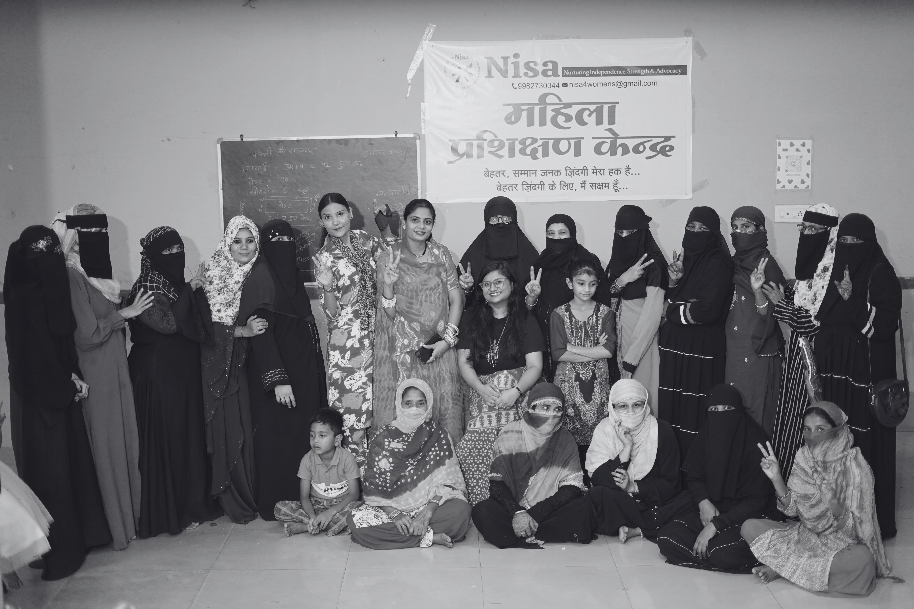

From Listening
to Livelihoods.
सुनने से
आजीविका तक।
NISA moves women from learning to earning through a model rooted deeply in the community. It starts not with a syllabus, but with a question.
नीसा समुदाय में गहराई से जुड़े एक मॉडल के ज़रिए महिलाओं को सीखने से कमाने तक ले जाता है। इसकी शुरुआत किसी पाठ्यक्रम से नहीं, बल्कि एक सवाल से होती है।

“What do you dream of?” “आपका सपना क्या है?”
We asked 250+ women. The answers shaped our model: हमने 250+ महिलाओं से पूछा। उनके जवाबों ने हमारे मॉडल को आकार दिया:
Proximityनज़दीकी
Income that doesn't require travelling far from home.
ऐसी आय जिसके लिए घर से दूर न जाना पड़े।
Dignity & Safetyगरिमा और सुरक्षा
A workspace that is predictable, safe, and respectful.
एक ऐसा कार्यस्थल जो सुरक्षित और सम्मानजनक हो।
Flexibilityलचीलापन
Preference for home-based work over rigid factory shifts.
सख्त फैक्ट्री शिफ्ट के बजाय घर-आधारित काम को प्राथमिकता।
Project Atmanirbhar प्रोजेक्ट आत्मनिर्भर
Not just a curriculum, but a collective aspiration. It is both a training centre and a safe space where women learn sewing, crochet, and embroidery while finding support in moments of crisis. सिर्फ एक पाठ्यक्रम नहीं, बल्कि एक साझा सपना। यह एक प्रशिक्षण केंद्र भी है और एक सुरक्षित स्थान भी, जहाँ महिलाएँ संकट के समय सहारा पाती हैं।
The 3-Stage Model
तीन चरणों वाला मॉडल
How we bridge the gap between training and income.
सीखने से कमाने तक का रास्ता बनाना।
Skill Development कौशल विकास
Foundational training in sewing, crochet, embroidery, and literacy. Building rhythm and confidence.
सिलाई, क्रोशे, कढ़ाई और साक्षरता में बुनियादी प्रशिक्षण। लय और आत्मविश्वास का निर्माण।
Production Readiness उत्पादन तैयारी
Training in finishing, consistency, measurement accuracy, and speed. Preparing for real market orders.
फिनिशिंग, निरंतरता, नाप की सटीकता और गति का प्रशिक्षण। असली बाज़ार के आर्डर के लिए तैयारी।
Livelihood Creation आजीविका निर्माण
Connecting women to orders via partner networks. Creating home-based micro-units to sustain income.
पार्टनर नेटवर्क के ज़रिए महिलाओं को ऑर्डर से जोड़ना। आय बनाए रखने के लिए घर-आधारित माइक्रो-यूनिट बनाना।
Early Outcomes
प्रारंभिक परिणाम
80+
Women Enrolled
महिलाएं नामांकित
35+
Crisis Support Cases
संकट सहायता मामले
100%
Neighbourhood Based
मोहल्ला आधारित
3
Skill Batches Active
कौशल बैच सक्रिय
Why This Works
यह क्यों काम करता है
Community Rooted समुदाय आधारित
We operate from within the neighbourhood, not from a distant office. This builds immense trust.
हम मोहल्ले के भीतर से काम करते हैं, दूर के दफ्तर से नहीं। इससे गहरा भरोसा बनता है।
Demand Driven मांग आधारित
Programs grow from what women actually ask for, not from external assumptions.
कार्यक्रम महिलाओं की वास्तविक मांग से बढ़ते हैं, बाहरी धारणाओं से नहीं।
Replicable दोहराने योग्य
The 3-stage pathway can be adapted to new communities with minimal infrastructure cost.
यह 3-चरणीय रास्ता कम लागत में नए समुदायों में भी अपनाया जा सकता है।